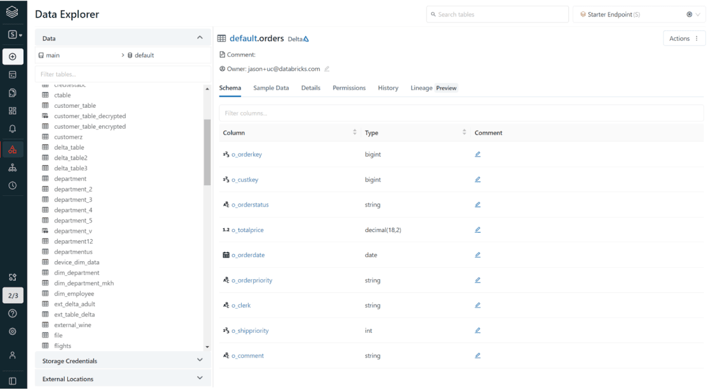

1 Introduction
Me and my team we are currently working in a massive migration (similar to a cloud migration). This migration involves many process, but one of them is to redirect every table reference that we find in more than 130 thousand lines of Python code.
Most of these lines of Python code are pyspark code to extract, transform and load data using the Apache Spark engine. Yes! We do have a massive amount of ETL workflows, and now, we need to change all of these workflows at once to use the new infrastructure that we are creating.
For example, let’s consider the following snippet of Python code:
Listing 1: Example of pyspark code that we might find in our codebase
# This is just an example of Python code. It is not real
# lines of Python code that exists inside Blip's codebase.
from pyspark.sql import SparkSession
spark = SparkSession.builder.getOrCreate()
df = (
spark.table("blip.events")
.groupby("OwnerId", "StorageDate")
.count()
)
df.show()You can see at Listing 1 that we have a spark.table() call to acess the table blip.events. This table is stored inside our distributed SQL database. In our current (or “old”) infrastructure, every SQL table that we have is concentrated into a single data catalog.
Because of that, there is no need to specify which data catalog we want to acess inside spark.table(), because all tables are inside the same data catalog. So spark.table() just uses the default data catalog of our environment, and it magically finds the table we asked for.
1.1 About data catalogs
We use Databricks as our data science platform to process, explore and share our data. One of the many functionalities that Databricks have is to organize SQL tables into data catalogs.
In essence, data catalogs are catalogs (or a collection) of SQL databases. In the example below, we are looking at the table orders inside the default database, which is stored inside the main data catalog.

You can read more about it at this link.
Now, in the our new infrastructure, SQL tables are organized into multiple data catalogs.